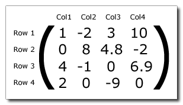

矩阵是排列成固定数量的行和列的数字的集合。通常这些数字是实数，但并非总是如此。 下图总体上显示了如何使用四行和四列构建矩阵： 
顶行是第 1 行，最左边的列是第 1 列，这个矩阵是 4 x 4 矩阵，因为它有 4 行和 4 列（可以构造其他大小的矩阵）。 在描述矩阵时，格式总是行 / 列，构成矩阵的每个数字称为矩阵的 元素。 矩阵中的元素具有特定的位置，由它们的行和列位置描述，其中矩阵的左上角是第 1 行第 1 列。在上面的矩阵示例中，第 1 行第 1 行元素的值是 “1”。第 2 行第 3 列元素的值是 “4.8”。
矩阵对于许多事物非常重要，但在处理 3D 空间时最常用，例如它们可用于设置摄像机视图或用于翻译或转换模型。在 GameMaker Studio 2 中存在以下用于处理矩阵的函数：
- matrix_get
- matrix_set
- matrix_build
- matrix_multiply
- matrix_build_identity
- matrix_build_lookat
- matrix_build_projection_ortho
- matrix_build_projection_perspective
- matrix_build_projection_perspective_fov
- matrix_transform_vertex
- matrix_stack_is_empty
- matrix_stack_clear
- matrix_stack_set
- matrix_stack_push
- matrix_stack_pop
- matrix_stack_top
- is_matrix